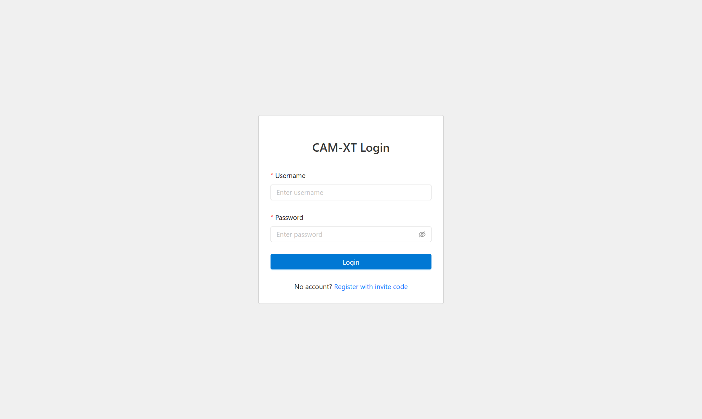
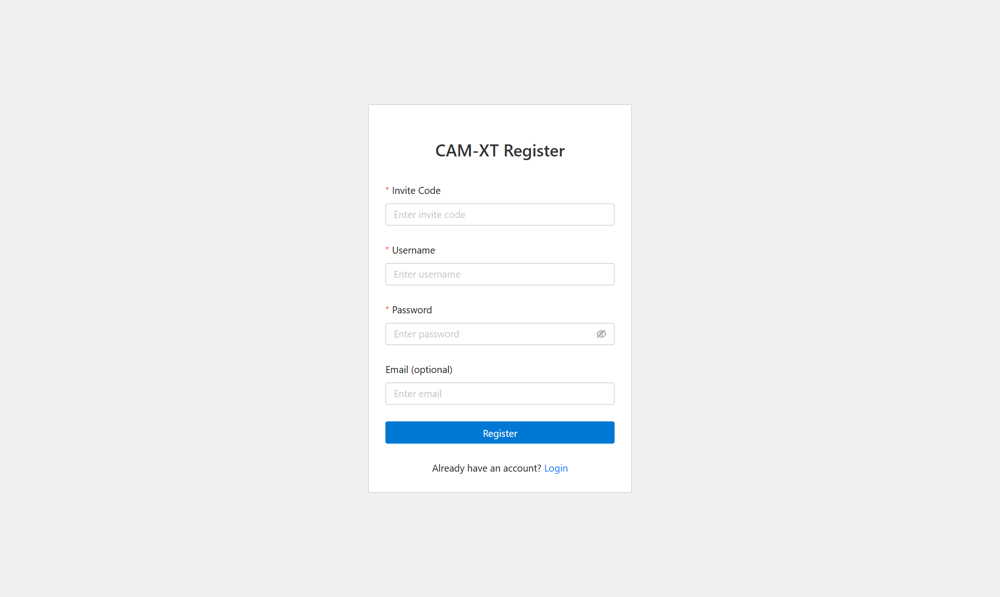
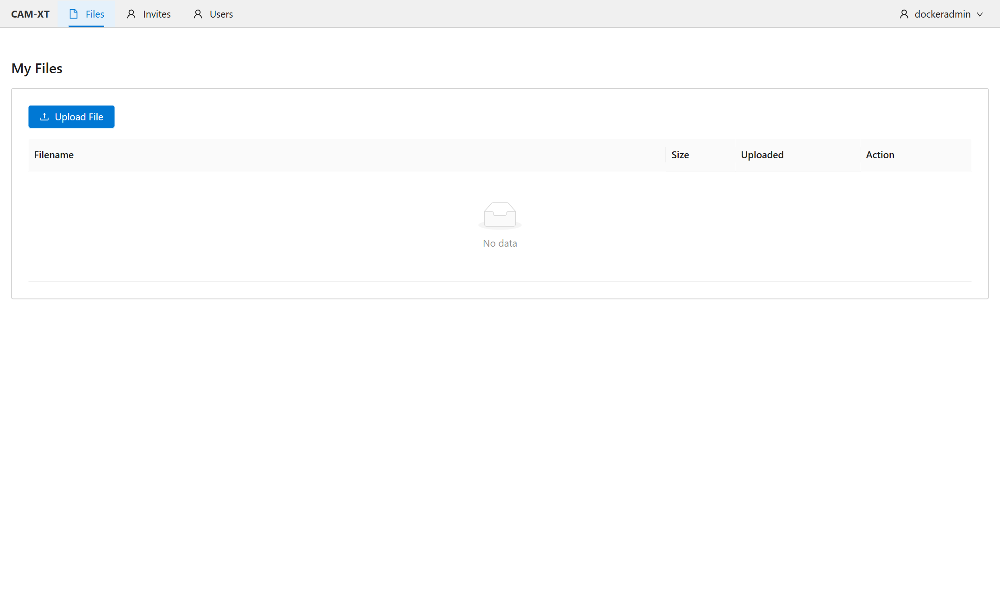
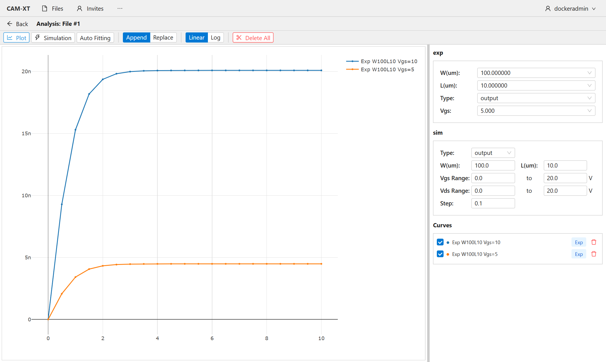
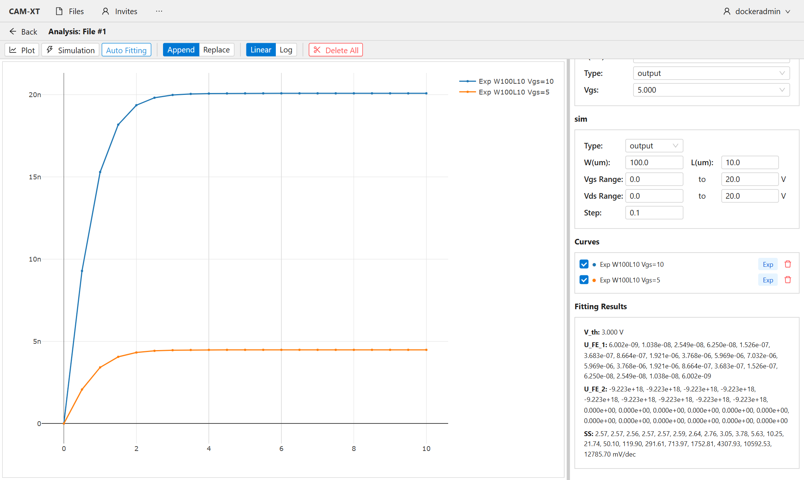
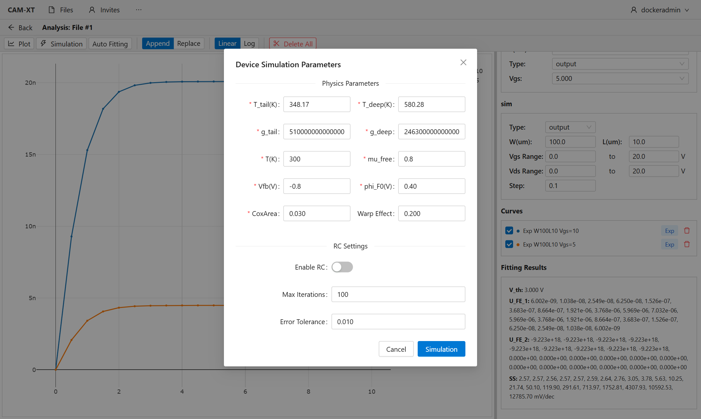
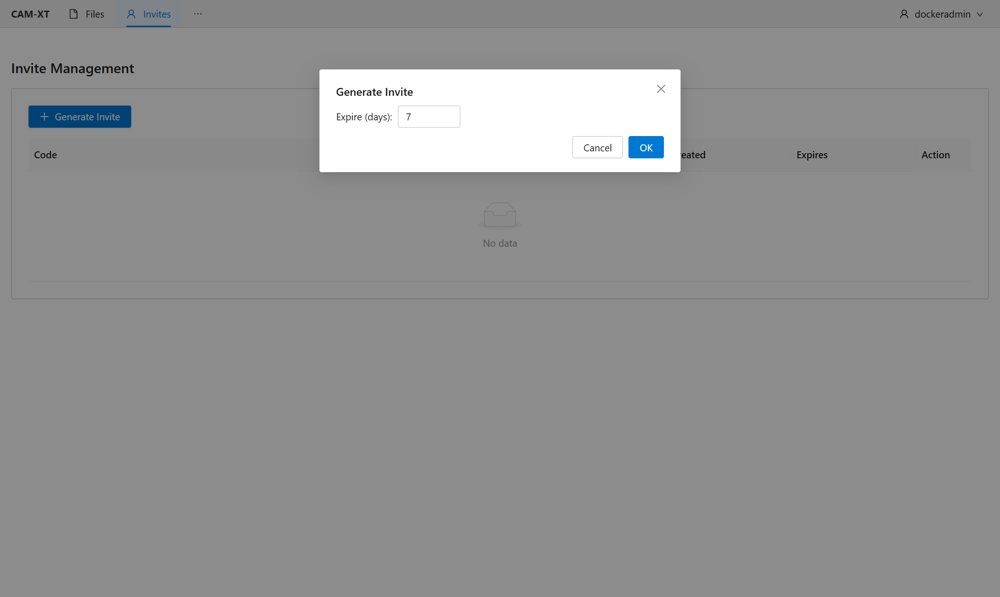
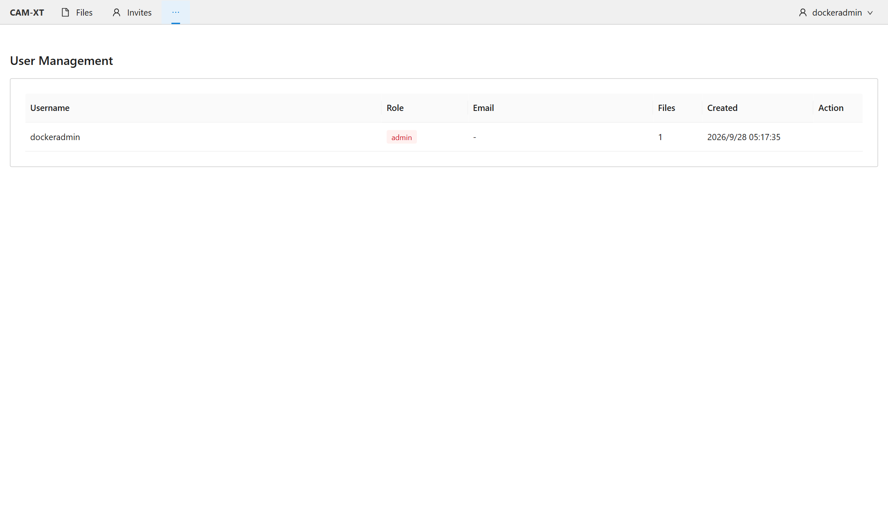

WebCamXT 是一款面向薄膜晶体管（TFT）I-V 测试数据的在线分析平台，采用浏览器/服务器（B/S）架构，无需安装客户端。主要功能：
在浏览器地址栏输入：http://10.102.35.1:8080

系统采用邀请码注册机制，邀请码由管理员生成发放。注册步骤：

输入用户名和密码登录。登录凭证有效期为 24 小时，过期后会自动跳转到登录页，重新登录即可。
| 角色 | 权限 |
|---|---|
| 普通用户（user） | 上传/管理自己的数据文件，进行分析与仿真 |
| 管理员（admin） | 普通用户全部权限 + 生成/撤销邀请码、管理所有用户 |
系统通过 Excel 文件导入测试数据，上传前请确认文件满足以下要求，否则会解析失败：
| 项目 | 要求 |
|---|---|
| 文件格式 | .xls 或 .xlsx，大小不超过 16 MB |
| 工作表 | 数据必须位于名为 Sheet1 的第一个工作表中 |
| 必需列名 | W（宽度 um）、L（长度 um）、TO（测试类型）、GateV（栅压 V）、DrainV（漏压 V）、DrainI（漏极电流 A） |
| TO 取值 | 0 = 输出特性数据（固定 GateV，扫描 DrainV）；1 = 转移特性数据（固定 DrainV，扫描 GateV） |
| 自动拟合要求 | 所选 W/L 下至少要有 2 个不同 DrainV 的转移特性（TO=1）数据 |
登录后进入「My Files」页面，可进行：
列表显示文件名、大小和上传时间。每个用户只能看到和操作自己上传的文件。

分析页面分为三部分：顶部工具栏、左侧绘图区、右侧参数面板。点击文件列表的「Analyze」即可进入：

| 按钮 | 作用 |
|---|---|
| Plot | 按右侧 exp 区选定的参数，绘制实验曲线 |
| Simulation | 打开仿真参数对话框，提交 TCAD 仿真（见第 6 节） |
| Auto Fitting | 对当前选定的 W/L 器件自动提取 Vth、UFE、SS |
| Append / Replace | 新曲线「叠加到」或「替换」现有曲线（用于多曲线对比） |
| Linear / Log | 纵轴线性 / 对数坐标切换 |
| Delete All | 清空绘图区所有曲线 |
设置仿真曲线的类型、W/L 以及扫描范围（Vgs Range、Vds Range、Step），该区域参数会与仿真对话框中的物理参数一起提交。
已绘制的曲线以列表管理：蓝色 Exp 标签为实验曲线，橙色 Sim 标签为仿真曲线；勾选框控制显示/隐藏，右侧删除按钮移除单条曲线。
点击「Auto Fitting」后显示：
| 指标 | 含义 |
|---|---|
| V_th | 阈值电压（V） |
| U_FE_1 | 线性区场效应迁移率（cm²/V·s） |
| U_FE_2 | 饱和区场效应迁移率（cm²/V·s） |
| SS | 亚阈值摆幅（mV/dec） |

点击工具栏「Simulation」打开参数对话框，分为「物理参数」与「RC 设置」两部分：

| 参数 | 含义 | 默认值 |
|---|---|---|
| T_tail (K) | 尾态特征温度 | 348.17 |
| T_deep (K) | 深能级特征温度 | 580.28 |
| g_tail | 尾态态密度 | 5.1e18 |
| g_deep | 深能级态密度 | 2.463e18 |
| T (K) | 测试温度（不可与 T_tail/T_deep 相等） | 300 |
| mu_free | 自由载流子迁移率（cm²/V·s） | 0.8 |
| Vfb (V) | 平带电压 | -0.8 |
| phi_F0 (V) | 费米势参考值 | 0.4 |
| CoxArea | 单位面积氧化层电容 | 0.03 |
| Warp Effect (M) | 翘曲效应系数 | 0.2 |
| 参数 | 含义 |
|---|---|
| Enable RC | 是否启用接触电阻提取（启用后仿真时间明显增加） |
| Max Iterations | RC 迭代求解的最大次数（默认 100） |
| Error Tolerance | RC 迭代收敛容差（默认 0.01） |
仿真完成后曲线自动叠加到绘图区（Append 模式），可与实验曲线直观对比。同时返回拟合误差率 fitting_error_rate（仿真电流与实验电流的平均相对误差，0~1，越小越好）。启用 RC 时还会返回各偏置点的接触电阻数组。
管理员登录后导航栏会出现管理菜单：


| 问题 | 原因与解决 |
|---|---|
| 提示「邀请码无效/已被使用/已过期」 | 邀请码输错、已被他人使用或超过有效期，请联系管理员重新生成 |
| 上传提示「Invalid file type」 | 只支持 .xls / .xlsx 格式 |
| 上传提示「文件解析失败」 | 检查：数据是否在 Sheet1；是否包含 W/L/TO/GateV/DrainV/DrainI 六列且列名无误 |
| 提示「Width/Length value not found」 | 所选 W/L 组合在数据文件中不存在，请在右侧下拉框中选择解析出的组合 |
| 页面突然跳回登录页 | 登录凭证（24 小时）过期，重新登录即可，数据不会丢失 |
| 提示「无权访问此文件」 | 每个用户只能访问自己上传的文件 |
| 仿真报 500 错误 | 记录操作步骤与参数，通过第 9 节方式反馈给管理员 |
测试期间发现问题或有改进建议，请按以下格式提交到统一的问题反馈收集表（见附带的《问题反馈模板.xlsx》或团队共享文档）：
| 字段 | 填写说明 |
|---|---|
| 提交人 / 日期 | 姓名与提交日期 |
| 类型 | Bug（缺陷）或 建议（优化） |
| 严重程度 | 致命 / 严重 / 一般 / 轻微 / 建议 |
| 所在页面 | 登录、文件管理、分析、仿真、管理后台等 |
| 操作步骤 | 按顺序写出复现步骤（1、2、3…），越详细越好 |
| 期望结果 / 实际结果 | 分别填写预期行为与实际发生的现象 |
| 截图 | 粘贴截图或将截图文件命名为「编号-说明.png」 |
— WebCamXT 使用手册 · 完 —